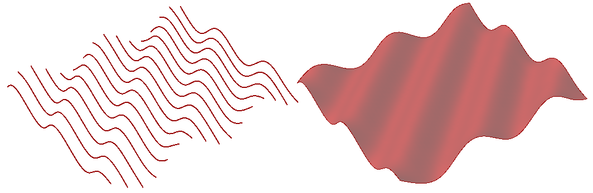
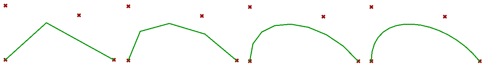
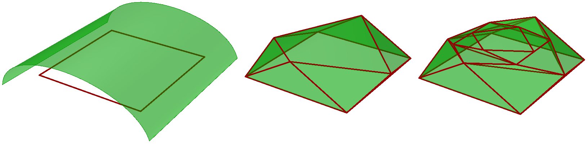
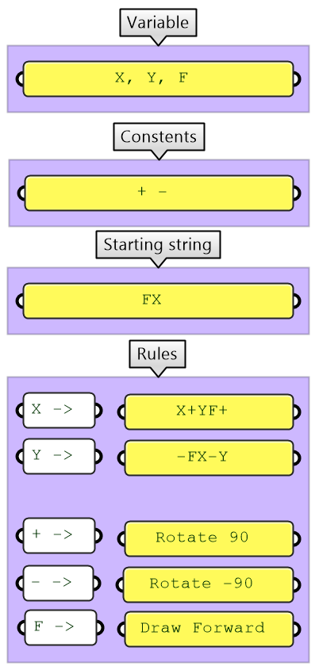
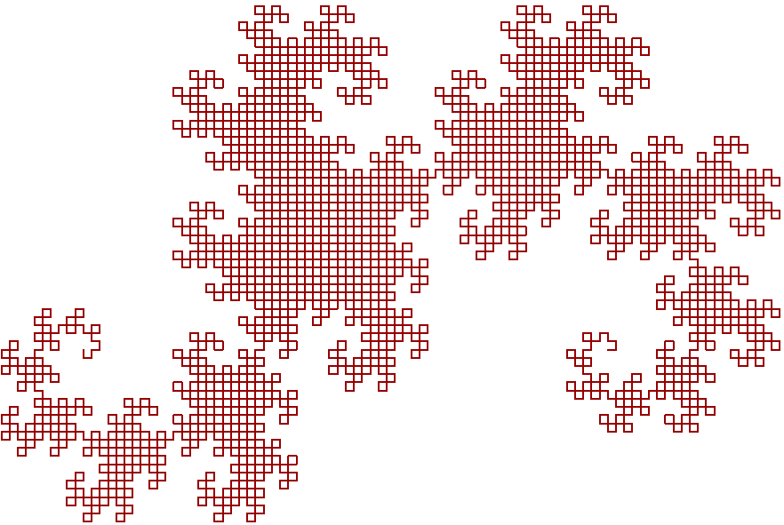
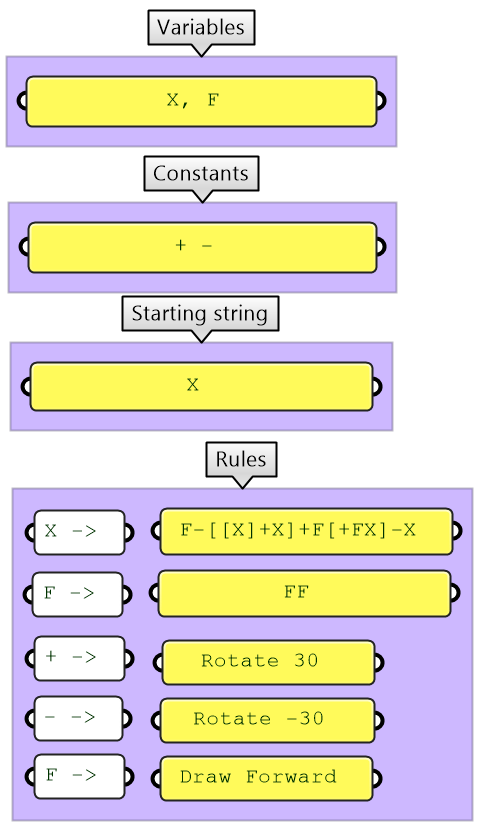
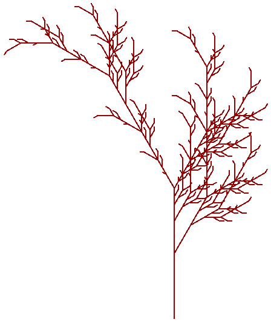
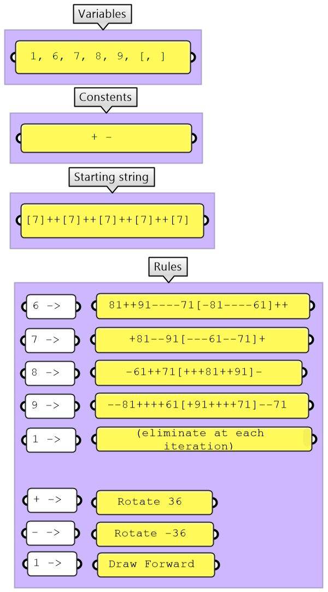
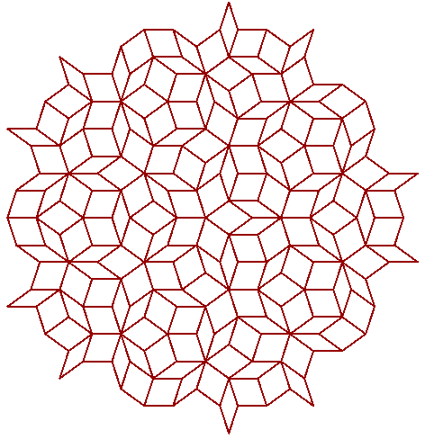
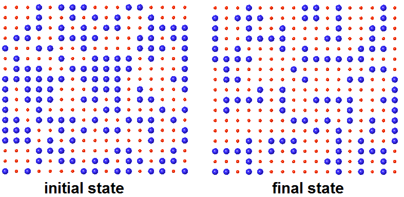

4.1 Introduction
In this chapter we will implement a few examples to create mathematical curves & surfaces and solve a few generative algorithms using C# in Grasshopper. Many of the examples involve using loops & recursions, which are not supported in regular Grasshopper components.
4.2 Geometry Algorithms
It is relatively easy to create curves & surfaces that follow certain mathematical equations when you use scripting. You can generate control points to create smooth NURBS or interpolate points to create the geometry.
4.2.1 Sine Curves & Surface
The following example shows how to create NurbsCurves, NurbsSurfaces, and a lofted Brep using the sine of an angle:
Create curves & surface using the sine equation

private void RunScript(int num, ref object OutCurves, ref object OutSurface, ref object OutLoft)
{
// List of all points
List<Point3d> allPoints = new List<Point3d>();
// List of curves
List<Curve> curves = new List<Curve>();
for(int y = 0; y < num; y++)
{
// Curve points
List<Point3d> crvPoints= new List<Point3d>();
for(int x = 0; x < num; x++)
{
double z = Math.Sin(Math.PI / 180 + (x + y));
Point3d pt = new Point3d(x, y, z);
crvPoints.Add(pt);
allPoints.Add(pt);
}
// Create a degree 3 nurbs curve from control points
NurbsCurve crv = Curve.CreateControlPointCurve(crvPoints, 3);
curves.Add(crv);
}
// Create a nurbs surface from control points
NurbsSurface srf = NurbsSurface.CreateFromPoints(allPoints, num, num, 3, 3);
// Create a lofted brep from curves
Brep[ ] breps = Brep.CreateFromLoft(curves, Point3d.Unset, Point3d.Unset, LoftType.Tight, false);
// Assign output
OutCurves = curves;
OutSurface = srf;
OutLoft = breps;
}
4.2.2 De Casteljau Algorithm to Interpolate a Bezier Curve
You can create a cubic Bezier curve from four input points. The De Casteljau algorithm is used in computer graphics to evaluate the Bezier curve at any parameter. If evaluated at multiple parameters, then the points can be connected to draw the curve. The following example shows a recursive function implementation to interpolate through a Bezier curve:
The De Casteljau algorithm to draw a Bezier curve with 2, 4, 8, and 16 segments

private void RunScript(Point3d pt0, Point3d pt1, Point3d pt2, Point3d pt3, int segments, ref object BezierCrv)
{
if(segments < 2)
segments = 2;
List<Point3d> bezierPts = new List<Point3d>();
bezierPts.Add(pt0);
bezierPts.Add(pt1);
bezierPts.Add(pt2);
bezierPts.Add(pt3);
List<Point3d> evalPts = new List<Point3d>();
double step = 1 / (double) segments;
for(int i = 0; i <= segments; i++)
{
double t = i * step;
Point3d pt = Point3d.Unset;
EvalPoint(bezierPts, t, ref pt);
if(pt.IsValid)
evalPts.Add(pt);
}
Polyline pline = new Polyline(evalPts);
BezierCrv = pline;
}
void EvalPoint(List<Point3d> points, double t, ref Point3d evalPt)
{
// Stopping condition - point at parameter t is found
if(points.Count < 2)
return;
List<Point3d> tPoints = new List<Point3d>();
for(int i = 1; i < points.Count; i++)
{
Line line = new Line(points[i - 1], points[i]);
Point3d pt = line.PointAt(t);
tPoints.Add(pt);
}
if(tPoints.Count == 1)
evalPt = tPoints[0];
EvalPoint(tPoints, t, ref evalPt);
}
4.2.3 Simple Subdivision Mesh
The following example takes a surface & closed polyline, then creates a subdivision mesh. It pulls the midpoints of the polyline edges to the surface to then subdivide & pull again:

private void RunScript(Surface srf, List<Polyline> inPolylines, int degree, ref object OutPolylines, ref object OutMesh)
{
// Instantiate the collection of all panels
List<Polyline> outPanels = new List<Polyline>();
// Limit to 6 subdivisions
if( degree > 6)
degree = 6;
for(int i = 0; i < degree; i++)
{
// Outer polylines
List<Polyline> plines = new List<Polyline>();
// Mid polylines
List<Polyline> midPlines = new List<Polyline>();
// Generate subdivided panels
bool result = SubPanelOnSurface(srf, inPolylines, ref plines, ref midPlines);
if( result == false)
break;
// Add outer panels
outPanels.AddRange(plines);
// Add mid panels only in the last iteration
if(i == degree - 1)
outPanels.AddRange(midPlines);
else // Subdivide mid panels only
inPolylines = midPlines;
}
// Create a mesh from all polylines
Mesh joinedMesh = new Mesh();
for(int i = 0; i < outPanels.Count; i++)
{
Mesh mesh = Mesh.CreateFromClosedPolyline(outPanels[i]);
joinedMesh.Append(mesh);
}
// Make sure all mesh faces normals are in the same general direction
joinedMesh.UnifyNormals();
// Assign output
OutPolylines = outPanels;
OutMesh = joinedMesh;
bool SubPanelOnSurface( Surface srf, List<Polyline>
inputPanels, ref List<Polyline> outPanels, ref List<Polyline> midPanels)
{
// Check for a valid input
if (inputPanels.Count == 0 || null == srf)
return false;
for (int i = 0; i < inputPanels.Count; i++)
{
Polyline ipline = inputPanels[i];
if (!ipline.IsValid || !ipline.IsClosed)
continue;
// Stack of points
List<Point3d> stack = new List<Point3d>();
Polyline newPline = new Polyline();
for (int j = 1; j < ipline.Count; j++)
{
Line line = new Line(ipline[j - 1], ipline[j]);
if (line.IsValid)
{
Point3d mid = line.PointAt(0.5);
double s, t;
srf.ClosestPoint(mid, out s, out t);
mid = srf.PointAt(s, t);
newPline.Add(mid);
stack.Add(ipline[j - 1]);
stack.Add(mid);
}
}
// Add the first 2 point to close last triangle
stack.Add(stack[0]);
stack.Add(stack[1]);
// Close
newPline.Add(newPline[0]);
midPanels.Add(newPline);
for (int j = 2; j < stack.Count; j = j + 1)
{
Polyline pl = new Polyline { stack[j - 2], stack[j - 1], stack[j], stack[j - 2] };
outPanels.Add(pl);
}
}
return true;
}
4.3 Generative Algorithms
Most of the generative algorithms require recursive functions that are only possible through scripting in Grasshopper. The following are four examples of generative solutions to generate the dragon curve, fractals, penrose tiling, and game of life:
4.3.1 Dragon Curve
|
 |
 |
private void RunScript(string startString, string ruleX, string ruleY, int Num, double Length, ref object DragonCurve)
{
// Declare string
string dragonString = startString;
// Generate the string
GrowString(ref Num, ref dragonString , ruleX, ruleY);
// Generate the points
List<Point3d> dragonPoints = new List<Point3d>();;
ParseDeagonString(dragonString, Length, ref dragonPoints);
// Create the curve
PolylineCurve dragonCrv= new PolylineCurve(dragonPoints);
// Assign output
DragonCurve = dragonCrv;
}
void GrowString(ref int Num, ref string finalString, string ruleX, string ruleY)
{
// Decrement the count with each new execution of the grow function
Num = Num - 1;
char rule;
// Create new string
string newString = "";
for (int i = 0; i < finalString.Length ; i++)
{
rule = finalString[i];
if (rule == 'X')
newString = newString + ruleX;
if (rule == 'Y')
newString = newString + ruleY;
if (rule == 'F' | rule == '+' | rule == '-')
newString = newString + rule;
}
finalString = newString;
// Stopper condition
if (Num == 0)
return;
// Grow again
GrowString(ref Num, ref finalString, ruleX, ruleY);
}
void ParseDeagonString(string dragonString, double Length, ref List<Point3d> dragonPoints)
{
// Parse instruction string to generate points
// Let base point be world origin
Point3d pt = Point3d.Origin;
dragonPoints .Add(pt);
// Drawing direction vector - strat along the x-axis
// Vector direction will be rotated depending on (+,-) instructions
Vector3d V = new Vector3d(1.0, 0.0, 0.0);
char rule;
for(int i = 0 ; i < dragonString.Length;i++)
{
// Always start for 1 & length 1 to get one char at a time
rule = DragonString[i];
// Move forward using direction vector
if( rule == 'F')
{
pt = pt + (V * Length);
dragonPoints.Add(pt);
}
// Rotate Left
if( rule == '+')
V.Rotate(Math.PI / 2, Vector3d.ZAxis);
// Rotate Right
if( rule == '-')
V.Rotate(-Math.PI / 2, Vector3d.ZAxis);
}
}
4.3.2 Fractal Tree
|
 |
 |
private void RunScript(string startString, string ruleX, string ruleY, int num, double length, ref object FractalLines)
{
// Declare string
string fractalString = startString;
// Denerate the string
GrowString(ref num, ref dragonString , ruleX, ruleY);
// Generate the points
List<Line> fractalLines = new List<Line>();;
ParsefractalString(fractalString, length, ref fractalLines );
// Assign output
FractalLines = fractalLines ;
}
void GrowString(ref int num, ref string finalString, string ruleX, string ruleF)
{
// Decrement the count with each new execution of the grow function
num = num - 1;
char rule;
// Create new string
string newString = "";
for (int i = 0; i < finalString.Length ; i++)
{
rule = finalString[i];
if (rule == 'X')
newString = newString + ruleX;
if (rule == 'F')
newString = newString + ruleF;
if (rule == '[' || rule == ']' || rule == '+' || rule == '-')
newString = newString + rule;
}
finalString = newString;
// Stopper condition
if (num == 0)
return;
// Grow again
GrowString(ref num, ref finalString, ruleX, ruleF);
}
void ParsefractalString(string fractalString, double length, ref List<Line> fractalLines)
{
// Parse instruction string to generate points
// Let base point be world origin
Point3d pt = Point3d.Origin;
// Declare points array
// Vector rotates with (+,-) instructions by 30 degrees
List<Point3d> arrPoints = new List<Point3d>();
// Draw forward direction
// Vector direction will be rotated depending on (+,-) instructions
Vector3d vec = new Vector3d(0.0, 1.0, 0.0);
// Stacks of points and vectors
List<Point3d> ptStack = new List<Point3d>();
List<Vector3d> vStack = new List<Vector3d>();
// Declare loop variables
char rule;
for(int i = 0 ; i < fractalString.Length; i++)
{
// Always start for 1 & length 1 to get one char at a time
rule = fractalString[i];
// Rotate Left
if( rule == '+')
vec.Rotate(Math.PI / 6, Vector3d.ZAxis);
// Rotate Right
if( rule == '-')
vec.Rotate(-Math.PI / 6, Vector3d.ZAxis);
// Draw Forward by direction
if( rule == 'F')
{
// Add current points
Point3d newPt1 = new Point3d(pt);
arrPoints.Add(newPt1);
// Calculate next point
Point3d newPt2 = new Point3d(pt);
newPt2 = newPt2 + (vec * length);
// Add next point
arrPoints.Add(newPt2);
// Save new location
pt = newPt2;
}
// Save point location
if( rule == '[')
{
// Save current point & direction
Point3d newPt = new Point3d(pt);
ptStack.Add(newPt);
Vector3d newV = new Vector3d(vec);
vStack.Add(newV);
}
// Retrieve point & direction
if( rule == ']')
{
pt = ptStack[ptStack.Count - 1];
vec = vStack[vStack.Count - 1];
// Remove from stack
ptStack.RemoveAt(ptStack.Count - 1);
vStack.RemoveAt(vStack.Count - 1);
}
}
// Generate lines
List<Line> allLines = new List<Line>();
for(int i = 1; i < arrPoints.Count; i = i + 2)
{
Line line = new Line(arrPoints[i - 1], arrPoints[i]);
allLines.Add(line);
}
}
4.3.3 Penrose Tiling
|
 |
 |
private void RunScript(string startString, string rule6, string rule7, string rule8, string rule9, int num, ref object PenroseString)
{
// Declare string
string finalString;
finalString = startString;
// Generate the string
GrowString(ref num, ref finalString, rule6, rule7, rule8, rule9);
// Return the string
PenroseString = finalString;
}
void GrowString(ref int num, ref string finalString, string rule6, string rule7, string rule8, string rule9)
{
// Decrement the count with each new execution of the grow function
num = num - 1;
char rule;
// Create new string
string newString = "";
for (int i = 0; i < finalString.Length; i++)
{
rule = finalString[i];
if (rule == '6')
newString = newString + rule6;
if (rule == '7')
newString = newString + rule7;
if (rule == '8')
newString = newString + rule8;
if (rule == '9')
newString = newString + rule9;
if (rule == '[' || rule == ']' || rule == '+' || rule == '-')
newString = newString + rule;
}
finalString = newString;
// Stopper condition
if (num == 0)
return;
// Grow again
GrowString(ref num, ref finalString, rule6, rule7, rule8, rule9);
}
private void RunScript(string penroseString, double length, ref object PenroseLines)
{
// Parse instruction string to generate points
// Let base point be world origin
Point3d pt = Point3d.Origin;
// Declare points array
// Vector rotates with (+,-) instructions by 36 degrees
List<Point3d> arrPoints = new List<Point3d>();
// Draw forward direction
// Vector direction will be rotated depending on (+,-) instructions
Vector3d vec = new Vector3d(1.0, 0.0, 0.0);
// Stacks of points & vectors
List<Point3d> ptStack = new List<Point3d>();
List<Vector3d> vStack = new List<Vector3d>();
// Declare loop variables
char rule;
for(int i = 0 ; i < penroseString.Length; i++)
{
// Always start for 1 & length 1 to get one char at a time
rule = penroseString[i];
// Rotate Left
if( rule == '+')
vec.Rotate(36 * (Math.PI / 180), Vector3d.ZAxis);
// Rotate Right
if( rule == '-')
vec.Rotate(-36 * (Math.PI / 180), Vector3d.ZAxis);
// Draw Forward by direction
if( rule == '1')
{
// Add current points
Point3d newPt1 = new Point3d(pt);
arrPoints.Add(newPt1);
// Calculate next point
Point3d newPt2 = pt + (vec * length);
// Add next point
arrPoints.Add(newPt2);
// Save new location
pt = newPt2;
}
// Save point location
if( rule == '[')
{
// Save current point & direction
Point3d newPt = new Point3d(pt);
ptStack.Add(newPt);
Vector3d newVec = new Vector3d(vec);
vStack.Add(newVec);
}
// Retrieve point & direction
if( rule == ']')
{
pt = ptStack[ptStack.Count - 1];
vec = vStack[vStack.Count - 1];
// Remove from stack
ptStack.RemoveAt(ptStack.Count - 1);
vStack.RemoveAt(vStack.Count - 1);
}
}
// Generate lines
List<Line> allLines = new List<Line>();
for(int i = 1; i < arrPoints.Count; i = i + 2)
{
Line line = new Line(arrPoints[i - 1], arrPoints[i]);
allLines.Add(line);
}
PenroseLines = allLines;
}
4.3.4 Conway Game of Life
A cellular automaton consists of a regular grid of cells, each in one of a finite number of states, “On” & “Off” for example. The grid can be in any finite number of dimensions. For each cell, a set of cells called its neighborhood (usually including the cell itself) is defined relative to the specified cell. For example, the neighborhood of a cell might be defined as the set of cells a distance of 2 or less from the cell. An initial state (time t=0) is selected by assigning a state for each cell. A new generation is created (advancing t by 1), according to some fixed rule (generally, a mathematical function) that determines the new state of each cell in terms of the current state of the cell and the states of the cells in its neighborhood. Check wikipedia for full details and examples.

private void RunScript(Surface srf, int uNum, int vNum, int seed, ref object PointGrid, ref object StateGrid)
{
if(uNum < 2)
uNum = 2;
if(vNum < 2)
vNum = 2;
double uStep = srf.Domain(0).Length / uNum;
double vStep = srf.Domain(1).Length / vNum;
double uMin = srf.Domain(0).Min;
double vMin = srf.Domain(1).Min;
// Create a grid of points & a grid of states
DataTree<Point3d> pointsTree = new DataTree<Point3d>();
DataTree<int> statesTree = new DataTree<int>();
int pathIndex = 0;
Random rand = new Random(seed);
for (int i = 0; i <= uNum; i++)
{
List<Point3d> ptList = new List<Point3d>();
List<int> stateList = new List<int>();
GH_Path path = new GH_Path(pathIndex);
pathIndex = pathIndex + 1;
for (int j = 0; j <= vNum; j++)
{
Point3d srfPt = srf.PointAt(uMin + i * uStep, vMin + j * vStep);
ptList.Add(srfPt);
int randState = rand.Next(0, 2);
stateList.Add(randState);
}
pointsTree.AddRange(ptList, path);
statesTree.AddRange(stateList, path);
}
PointGrid = pointsTree;
StateGrid = statesTree;
}
private void RunScript(DataTree<int> grid, int gen, ref object OutGrid)
{
// Get state at the defined generation
for(int i = 0; i < gen; i++)
grid = NewGeneration(grid);
OutGrid = grid;
}
public DataTree<int> NewGeneration(DataTree<int> inStates)
{
int i, j, c, nc;
List<int> prvBranch;
List<int> nxtBranch;
List<int> branch;
DataTree<int> states = new DataTree<int>();
states = inStates;
for (i = 0; i <= states.Branches.Count - 1; i++)
{
branch = states.Branches[i];
for (j = 0; j <= branch.Count - 1; j++)
{
c = branch[j];
nc = 0;
// Check neighbouring states
// Next
nc = nc + branch[(j + 1 + branch.Count) % branch.Count];
// Prev
nc = nc + branch[(j - 1 + branch.Count) % branch.Count];
// Top
nxtBranch = states.Branches[(i + 1 + states.Branches.Count) % states.Branches.Count];
nc = nc + nxtBranch[(j + 1 + nxtBranch.Count) % nxtBranch.Count];
nc = nc + nxtBranch[(j + nxtBranch.Count) % nxtBranch.Count];
nc = nc + nxtBranch[(j - 1 + nxtBranch.Count) % nxtBranch.Count];
// Bottom
prvBranch = states.Branches[(i - 1 + states.Branches.Count) % states.Branches.Count];
nc = nc + prvBranch[(j + 1 + prvBranch.Count) % prvBranch.Count];
nc = nc + prvBranch[(j + prvBranch.Count) % prvBranch.Count];
nc = nc + prvBranch[(j - 1 + prvBranch.Count) % prvBranch.Count];
// Set the new state
if (c == 1)
{
if (nc < 2 | nc > 3)
c = 0;
}
else if (c == 0)
{
if (nc == 3)
c = 1;
}
branch[j] = c;
}
}
return states;
}
End of Guide
This is part 4 of the Essential C# Scripting for Grasshopper guide.